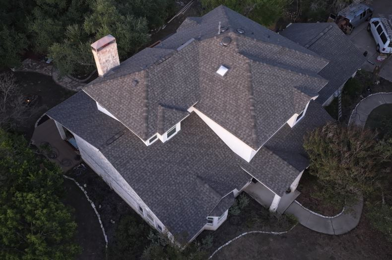
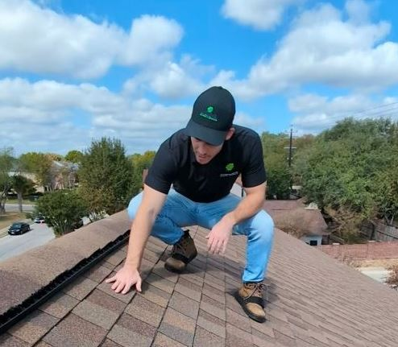
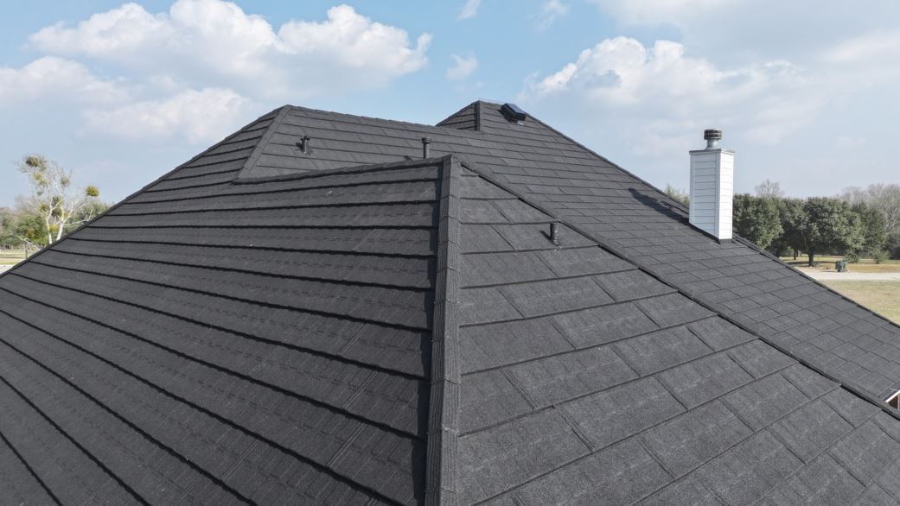

If you've lived in Central Texas for more than a few years, you already know the routine. A hailstorm rolls through. Neighbors start finding dents in gutters and cracked shingles. Insurance adjusters and out-of-state roofers flood the area. And suddenly everyone's talking about "impact-resistant shingles."
But here's the problem: most homeowners aren't told the difference between Class 3 and Class 4 roofing systems — and understanding that difference is key for Austin and Central Texas homeowners to make informed decisions.
If you're considering a roof replacement after hail damage, or you simply want better long-term protection for your home, here's what you need to know.
What Are Class 3 and Class 4 Shingles?
"Class" ratings refer to a shingle's impact resistance — essentially, how well it can withstand hail strikes and debris impact. These ratings are based on standardized testing known as UL 2218 impact testing.
Class 3 Shingles
Class 3 shingles are designed to withstand moderate hail impact. In real-world applications, Class 3 roofing systems are generally considered resistant to hail up to approximately 1.5 inches in diameter.
They offer improved durability over standard architectural shingles and can be a good upgrade for some homeowners looking for better storm resistance without moving into premium roofing categories.
Class 4 Shingles
Class 4 shingles are the highest commonly available impact-resistance rating for asphalt shingles. These systems are specifically engineered to better resist cracking, tearing, and granule loss during hailstorms.
In our experience throughout Central Texas, Class 4 roofing systems generally perform well against hail up to approximately 2 inches in diameter. In areas like Austin, Georgetown, Round Rock, Leander, Cedar Park, Temple, Harker Heights, and San Antonio, that added durability can make a major difference over time.

Class 3 vs Class 4 Roofing Comparison
| Feature | Class 3 Shingles | Class 4 Shingles |
|---|---|---|
| Impact Resistance | Moderate | Highest Asphalt Rating Available |
| Typical Hail Resistance | Up to ~1.5 inch hail | Up to ~2 inch hail |
| Insurance Discounts | Often Eligible | More Commonly Eligible |
| Typical Insurance Savings | $300–$500/year* | $500–$800/year* |
| Upfront Cost | Lower | Higher |
| Long-Term Durability | Good | Excellent |
| Best For | Budget-conscious upgrades | Long-term Texas homeowners |
*Savings vary based on carrier, location, roof system, deductible structure, and individual policy details. These ranges reflect what we commonly see among Verstera Roofing customers throughout Central Texas.
Why This Matters in Central Texas
Texas gets hit hard by large hail, high winds, extreme heat, rapid temperature swings, and severe spring storms. According to NOAA, Texas consistently ranks among the states with the highest number of severe hail events annually.
At Verstera Roofing, we commonly see hail ranging from 1.5 inches to 2 inches throughout the Austin and San Antonio regions. Standard shingles often take cumulative damage over the years, even if it's not immediately visible from the ground.
The result for homeowners with inadequate roofing:
- Shorter roof lifespan
- More insurance claims
- More out-of-pocket repairs
- Increased risk of leaks and interior damage
For homeowners planning to stay in their home long-term, impact-resistant roofing can help reduce those headaches significantly.

The Biggest Difference: Durability
This is where Class 4 shingles really separate themselves. Many Class 4 products are manufactured with:
- Polymer-modified asphalt
- Reinforced backing
- Enhanced flexibility
- Better granule retention
That means they're often better able to absorb impact instead of cracking under pressure. In real-world terms: a standard roof may suffer noticeable damage from a hailstorm that a Class 4 roof may withstand with far less deterioration.
No roofing system is "hail proof." But some are absolutely more hail-resistant than others. Metal roofing tends to provide the most impact-resistance long-term. Over the last 10 years, we've also personally observed that properly installed standing seam metal roofing and stone coated steel roofing systems often resist hail larger than 2 inches with minimal cosmetic or functional damage if installed correctly.
You can learn more about long-term roofing savings in our article: How Metal Roofing Can Save You Money.
Popular Class 4 Roofing Options
Several manufacturers offer highly regarded Class 4 roofing systems. Some of the most popular options we see homeowners choose include:
- Malarkey Legacy shingles
- Owens Corning Duration Storm shingles
- Standing seam metal roofing systems
- Stone coated steel roofing systems
Many homeowners upgrading to impact-resistant roofing are also considering premium long-term systems like standing seam metal and stone coated steel because of their durability, lifespan, and insurance savings potential. Stone coated steel systems often result in even larger insurance savings — frequently exceeding $800 per year depending on the policy and carrier.
You can read one of our real-world client examples here: Stone Coated Steel West Lake Hills Client Case Study.

Can Class 4 Shingles Lower Insurance Premiums?
In many cases, yes. Some insurance carriers offer discounts for qualifying Class 4 roofing systems because they may reduce future claims risk. The amount varies by insurance carrier, policy structure, location, and roofing product installed.
The Insurance Institute for Business & Home Safety (IBHS) has also published research supporting the performance benefits of impact-resistant roofing materials.
Before replacing your roof, it's worth asking your insurance company:
"Do you offer premium discounts for UL 2218 Class 4 shingles?"
Not All "Impact Resistant" Roofs Are Equal
Two roofs may both be labeled "Class 4," but material quality, installation quality, ventilation design, and manufacturer warranties can all differ. The roofing contractor matters just as much as the product itself. A poorly installed premium roof can still fail prematurely.
That's why homeowners should focus on:
- Proper attic ventilation
- High-quality underlayment systems
- Detailed workmanship standards
- Transparent documentation
The National Roofing Contractors Association (NRCA) also emphasizes proper installation practices as critical to roof system performance. You can also review additional homeowner roofing questions in our Roofing FAQs.
Frequently Asked Questions
Do Class 4 shingles prevent hail damage?
No roofing system is completely hail-proof, but Class 4 shingles are specifically engineered to better withstand hail impact and reduce the likelihood of severe damage.
Are Class 4 shingles worth it in Texas?
For many Texas homeowners, especially in hail-prone areas, the added durability and potential insurance discounts can make them a smart long-term investment.
Will my insurance company pay for a Class 4 upgrade?
Depending on your policy and claim scope, homeowners may be able to pay the difference to upgrade from standard shingles to a Class 4 roofing system.
How much more do Class 4 shingles cost?
Costs vary by manufacturer and roof size, but many homeowners find the long-term durability offsets the higher upfront investment.
What is the best roofing material for hail in Texas?
Many roofing professionals consider Class 4 impact-resistant shingles among the best asphalt roofing options for Texas hail conditions. Metal roofing and stone coated steel systems generally offer even greater long-term hail resistance.
What roofing systems qualify for insurance discounts?
Many insurance carriers offer discounts for Class 3 shingles, Class 4 shingles, standing seam metal roofing, and stone coated steel roofing systems. Eligibility varies by policy and provider.